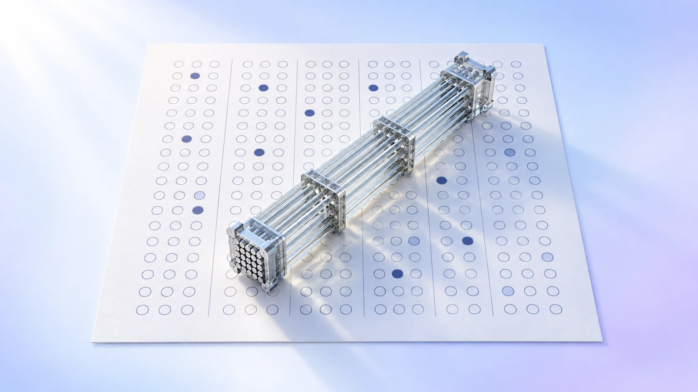
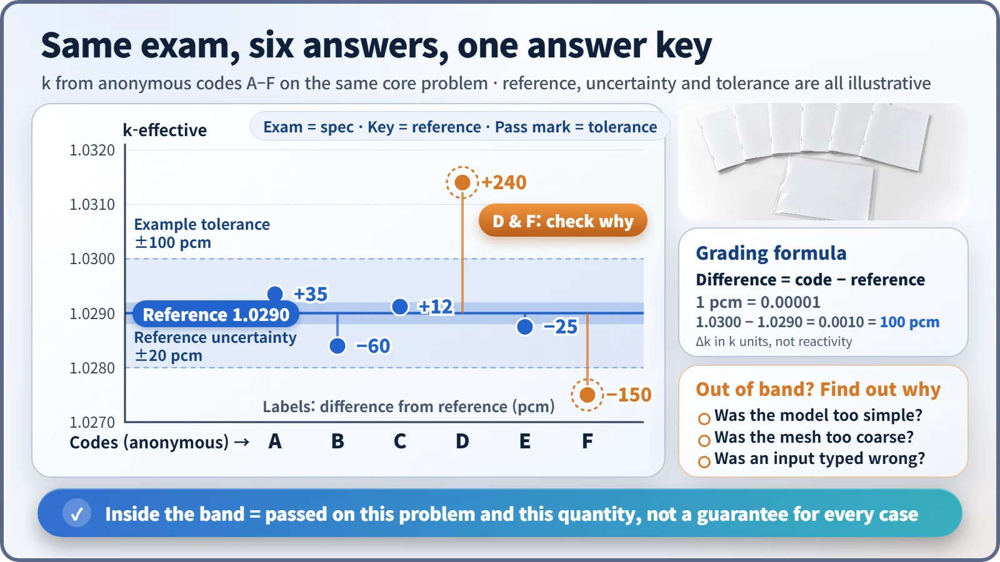
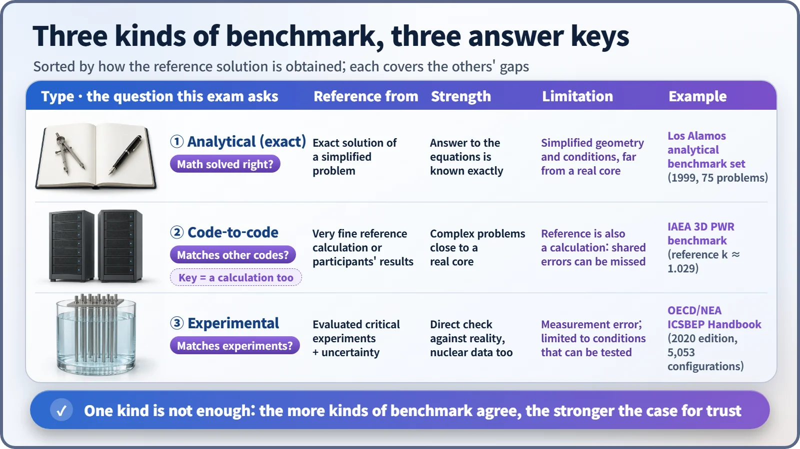

Modeling, Simulation & Computation · 262
Everyone Sits the Same Exam — Benchmark Problems in Reactor Physics Calculations
Two codes, two answers and no answer key tell you nothing; a benchmark gives every code the same exam paper and the same reference solution.

A benchmark problem is a shared exam paper for calculation codes: the conditions are fully specified and a trustworthy reference solution is attached. Many codes solve the same problem, their differences from the reference are measured (often in pcm), and analytical, code-to-code and experimental benchmarks are combined so that each covers the others' blind spots.
Two answers, no answer key
Two computer programs calculate the effective multiplication factor of the same reactor core, the number that tells you how many times the neutron population multiplies from one generation to the next. One answers 1.0291; the other answers 1.0302. Which one is right?
You can't tell from this alone. Both might be wrong, or they might have been solving slightly different problems. Two numbers are no use without an answer key, and that is what a benchmark problem provides.
To compare schools, start with the same exam paper
If every school sets its own test, "our average is 90%" can't be compared from one school to the next. So everyone sits the same paper and it is marked against the same answer key; only then does it show which school is weak where.
A benchmark problem is a shared exam paper whose calculation conditions are fully specified and which comes with a trustworthy reference solution, so that many organizations and codes can solve the same problem and compare results. A good one has three things:
- a complete specification of core geometry, materials and boundary conditions, so everyone solves the same problem;
- a reference solution, with its own uncertainty;
- the items to be graded, such as the effective multiplication factor or the power distribution.
How the grading works
Difference = code result − reference solution
For values close to 1, like the effective multiplication factor, the differences are tiny, so the unit pcm is used: 1 pcm is 0.00001. If the reference is 1.0290 and a code gives 1.0300, the difference is 0.0010, or 100 pcm.
That difference is weighed against the reference solution's uncertainty and a tolerance agreed in advance. Inside the tolerance: "trustworthy under these conditions." Outside it: "let's find out where it went wrong." The cause might be a model that was too simple, a mesh that was too coarse, or an input entered incorrectly.

In blind benchmarks, participants can't see the answer key in advance: the experimental results are kept hidden and calculations are submitted first, which stops anyone from tweaking inputs to match the answer.
Where does the answer key come from? Three kinds of exam
① Analytical (mathematical) benchmarks. The problem is simple enough to be solved exactly, so the answer to the equations is known and a code can be checked for solving them correctly. A well-known example is the set of 75 criticality problems with exact solutions compiled by Los Alamos National Laboratory in 1999. The catch: simple shapes with only a few regions, far from a real core. [1]
② Code-to-code comparison benchmarks. Complex problems close to a real core, with a very finely resolved calculation or the participants' results as the reference. The famous example is the IAEA 2D and 3D PWR benchmarks, created by an international working group in the 1970s; the reference effective multiplication factor of the 3D problem is about 1.029. But the reference is itself a calculation, so an assumption shared by everyone can be wrong for everyone. [2]
③ Experimental benchmarks. The answer key is a measured critical experiment, in which a fission chain reaction was set up to be exactly self-sustaining. The flagship is the OECD Nuclear Energy Agency's ICSBEP Handbook: begun in the United States in 1992, international from 1995, and with more than 5,000 configurations at or near criticality in its 2020 edition. It checks nuclear data and physics models against reality, but measurements carry errors, and only testable conditions are covered. [3] [4]

Topping a practice exam isn't a perfect final score
Passing a benchmark doesn't make a code right everywhere. It is confirmed only for the conditions on that exam paper; a new fuel or reactor type needs exam papers that match.
The reference solution isn't the perfect truth. Experiments carry measurement error and high-precision calculations carry calculation error, so the error bar on the answer key is examined too.
Similar answers from several codes are no guarantee. If they share nuclear data with an error in it, they can drift together, which is why the three types are combined.
These benchmarks also differ from computer-speed benchmarks: the point is distance from the right answer, not speed. Within verification and validation (V&V), the whole framework for establishing a code's trustworthiness, a benchmark is one important tool.
A report card attached to every result
At nuclear plants, benchmarks confirm in advance how accurately core design codes predict the power distribution. In criticality safety analysis, which checks that no chain reaction can start while spent fuel is stored or transported, critical-experiment benchmarks measure a code's bias so that extra margin can be added.
Key takeaways
A bare "1.0291" earns trust only when it comes with a record like "on the same exam paper, it was this many pcm from the reference." That record is what a benchmark problem provides.